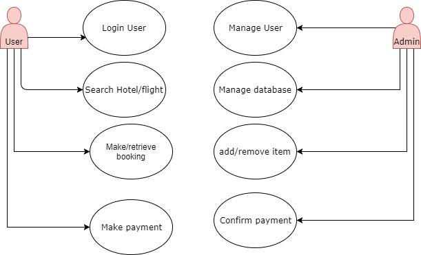
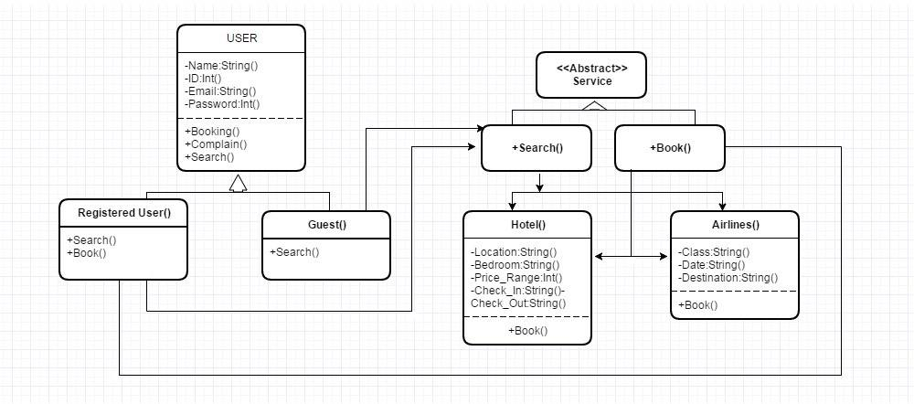

Introduction
1.1 Purpose
The purpose of this document is to give a detailed description of the requirements for the “What a Trip” software. It will illustrate the purpose and complete declaration for the development of system. It will also explain system constraints, interface and interactions with other external applications. This document is primarily intended to be proposed to a customer for its approval and a reference for developing the first version of the system for the development team
1.2 Document Conventions
The document is written in times new roman with font size 12 and the headlines used font size 14 and was bold letters. And the heading for each section uses font size 18 and is in bold letters.
1.3 Intended Audience and Reading Suggestions
The intended audience of this Document is potential investors and also developers as they can see this and have a proper idea about the project. The suggested reading of this document is in order as presented and people who wants to have a quick look can have a look at the index and can easily find the material and have that
1.4 Product Scope
We are currently living in a time when the world is a global village and so people are more and more travelling to the different parts of this world. But travelling is not easy. It comes with hassles like booking flights and hotels and planning the trip efficiently and so on. That’s where out software comes in. It is our goal to make this software a one stop solution for all the travelling needs. We are planning to build a software that will be able to book flight and hotels as per requirements from the customer and will help to deal with planning the trip, taking all the hassles away from customers so that they can enjoy the trip.
The software will have a both online and an android presence. We primarily hope to implement a one stop solution for travelling needs. By signing up in our website people can search for desired flights and hotels and book them at ease.
They can search for flights via various parameters like class or date and time also book and cancel the flight as they wish.
Same sort of function will be available for booking hotels like search based on quality of hotel and locations and various other parameters that will be discussed in detail in the next sections
We are also aiming to make the software user friendly and useful from a employee perspective as they will be able to get the users data, suggest package and get details about various deal and show them with ease.
Also we are also looking to implement and improve the software for admins giving them the tools necessary to maintain the software, and interact and troubleshoot various aspect.
In the upcoming section all these will be discusses in detail
Back to top
Description
2.1 Product Perspective:
This travel site is eventually intended for the travel lovers and people who want to go for a trip. People can use the site to know about exciting traveling destinations and make their way to travel more smother using the site. Website will be main user interface where users can plan his trip and also book a flight, hotel and know about the destinations.However, this web sitewill be only a part of a larger system. There will be database where all the user data is kept and allthe operations are done. An application based interface will also be developed for android platform. Website and an android application will only be the interface for the user to receive our service and plan for a remarkable trip.

2.2 Product Functions:
To use the services of website and app, users are required to register or login user popular social/mail network. Whenever a new user registered, all the required data will be created in the database and a reservation feature will be assigned for the user. Registered user would get confirmation mail for registering. Later, user will be able to login and logout the system anytime he wants. Other users who would not register would see all the sites, packages and also would search but to book/reserve a service, they will need to log in.
Since every operation that user perform reflected to our database, user will find his wish list/history however he leaves last time. From the user point of view, user will feel to resume his preferences where he left. User will be able to search a hotel/flight based on various features of smart search like search by price, check in date, availability, amenities, distance from a place etc. User also can book a hotel/flight and pay instant or pay on stay/pay at airport. All of the preference/information users created will be kept in database.

2.3 USER CLASS and CHARACTERISTICS
Users of the system should be able to retrieve/book flight information/confirmation between two given cities with the given date/time of travel from the database. A route from city A to city B is a sequence of connecting flights from A to B such that:
a) There are at most two connecting stops, the starting city and destination city of the trip.
b) The connecting time is shown.
The system will support two types of user privileges, Customer, and Employee. Customers will have access to customer functions, and the employees will have access to both customer and flight management functions.
User functions should be;
Make new reservation
Retrive Reservation
Print ticket
User can search Via
Search flight
One way/MultiCity
Date/Time
Class
Confirmation
Cancel Reservation
Users can also book hotels choosing a location, room type, price range, amenities, availability etc. Here are two type of user as Customer and Admin. Customer will access customers function and admin both customer and administrative functions.
User should be able to do the following functions:
Search Hotel
Book A hotel
Provide personal information for reservation
User can search via
Search Hotel
Location
Room Type & number of persons
Rating & Aminities
Pay Now and Pay on stay
Cancel Reservations
The Employee should have following management functionalities:
Get all user reservations
Get all details for hotel/flight
Calculate total fare/sell
Interact with flight/hotel
Update user wish list/recommendation
Suggest best package/offer
Admin Function:
Read all user database
Add/cancel/remove user
Add/cancel booking
Add new hotel/flight
Update price on regular basis
Interact with user for troubleshoot
2.4 Operating Environment
System would have English writtensite to operate
System would have own database using MySQL
System would run on windows base OS and Linux (android) OS
System would be built on Laravel framework
System would use bootstrap for UI design
System would be cross platform (Android and web view)
System would be Client/server based

Back to top
3.External Interface Requirements
This service will take input from the user via keyboard and mouse. For voice search, the user need a microphone connected with their device.
3.1 User Interfaces
The user interface is simple and the user can access all contents form the Homepage and other pages. The user does not need any additional training to use this service but the website has only one supported language which is English. So the users need to know English if they want to use this service. A sample of the user interface of the website is attached below.


This user interface is created with bootstraps and HTML to make it simple and accessible for both the users and the developers.
WhatATrip.com will have separate pages for hotel and flight booking which can be accessed from the navigation bar on top of the site.Both will provide the users with various filters using which the user can search for their desired deals. The filtering options will include area of the hotel, price range ,flight schedule etc.
Users can sign up or sign in by clicking the links on top of the webpage. Users who sign in can also jump to their profiles and see the bookings they made and their current status if they did so already.
3.2 Hardware Interfaces
WhatATrip.com is a website that can be accessible by virtually every web browser. Smoothness of the user interface will vary according to the quality of the internet connection and the download and upload speeds of the device that the website is being accessed with.There will also be an android app which will give the same services
3.3 Software Interfaces
The front-end of WhatATrip.com will be made using html,php and css and a utilizing a bootstrap template and a MySQL database will be made in phpmyadmin. The front-end and the back-end will then be connected using the Laravel framework, which utilizes the MVC pattern. MVC stands for Model-View-Controller. It helps to connect the front-end and back-end of a website or web application by organising the codes into three interconnected parts. The database is managed in the Model section, the front-end code is managed by the View section and finally the php code that connects the database to the front-end is managed by the Controller section. The resulting application will then hosted be on a server. Initial testing will be done by hosting on a WAMP Local Server.
3.4 Communication Interfaces
Users can choose to directly sign up and log into WhatATrip.com, which will then send the data directly to our database or they can choose to sign in with their existing Facebook/Google accounts, which will be facilitated with the respective APIs.
Back to top
4.System Features
This section demonstrates most prominent features and explains how they can be used and the results they will give back to the use
4.1 Book Hotel
This feature will help the users to book an available hotel room in the hotel of their choice.
Expanded use case

Exception : If user is not log in then serve register page.
4.2 Book Flight
User can use this feature to book flight, flight class etc to the destinations of their liking.

Exception : If user doesn't log in then serve register page.
4.3 Smart Finder
This feature will help the user to find hotels in a specific area where they want to stay.

4.4 Travel Guide
Travel Guide will help the user to find any nearby hotel close to them.

4.5 Registration
User need to login to use this travel guide. They need to use their Facebook account to complete the registration for this service.

Back to top
5. Non-functional requirements
5.1.Performance Requirements
The system shall function in real-time: any operation on the stored information, triggered
by an user.
The system shall allow simultaneous use by multiple users, without data corruption.
For the mobile app the app must be supported on recent 3 to 4 versions of android. Also, it should not show any performance issues regardless of any features.
5.2 Security Requirements
In order to use the service of the website, users must first authenticate themselves by
name, email id, password, credit card info. The system shall not allow access if the user fails to provide correct login information. All kinds of transaction shall be monitored and validate by the authorized personnel. Any type of unethical means will not go unnoticed.
Physical access to the computer(s) storing the users Database shall be restricted to
authorized personnel.
5.3 User Interface Requirements
The user interface of the application must be user-friendly, intuitive and easy to use,
implementing the ergonomics standards.
For the mobile platform the app should be user-friendly, well organized and easily understandable.
5.3 Availability & Reliability
The software system could provide automatically generated backup (on external hard
drives) containing all the stored information at the time the backup is taken. The system shall
allow authorized users to restore the data from an existing backup.
About
It was a group project SRS for CSE 327.1. Which is done by-
Mohammad Mahabubul Hasan 1421274042
Rifat Hossain 152087642
Arnab Rezvi 1430759642
Ahmed aziz nahin 1520476042
khan shamrat 1320492042
Shirjoy malek 1511321042
Pritom Roy 1430378042
Back to top